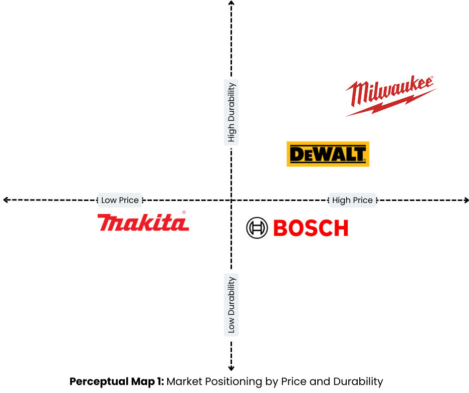
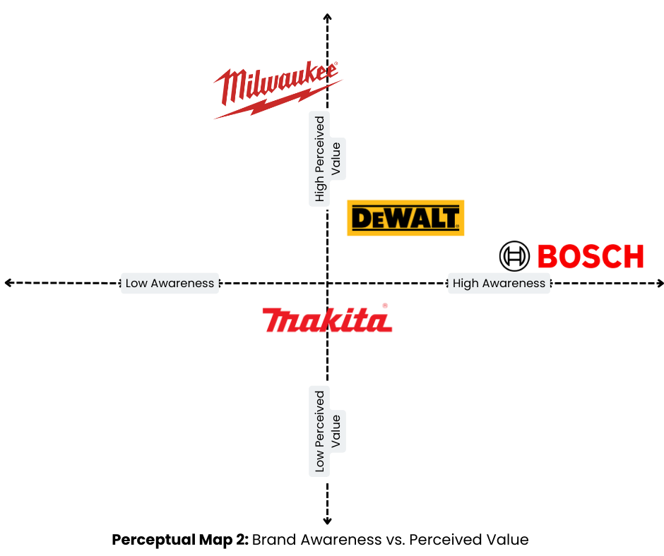
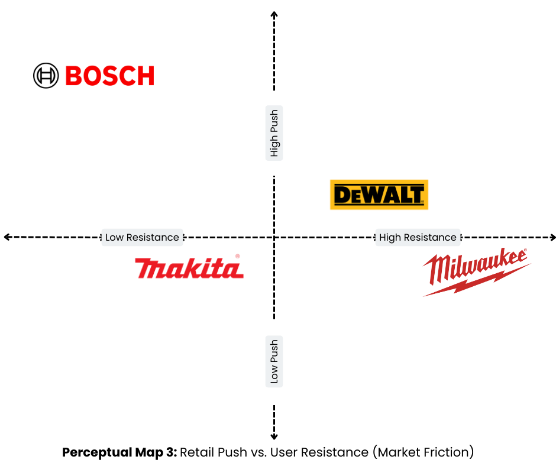

Situation Analysis
Market Overview
Vietnam’s professional tools market is expanding in line with construction, infrastructure, and manufacturing growth. Key trades such as HVAC, Mechanical, Electrical, and Plumbing systems (MEP), and civil works are becoming more professionalized, which creates strong demand for cordless technologies.
Market size and growth
- Power tools market value: USD 1.3 billion in 2023 (Awasthi, 2024).
- Tools & Machines market: USD 1.50 billion projected for 2025, with 2.77% CAGR (2025–2029) (Statista, 2025).
- Construction sector: from USD 74.81 billion in 2025 to USD 110.42 billion in 2030 (8.1% CAGR) (Mordor Intelligence, 2025).
- Equipment volumes: 6.12k units in 2023 → 7.90k units by 2029 (4.35% CAGR) (Arizton, 2025).
Demand drivers
- Urbanization and infrastructure projects expanding across major cities.
- Safety and compliance concerns encouraging cordless adoption in indoor environments.
- Mobility and productivity needs, as trades increasingly require lighter tools for tighter spaces.
Adoption realities
- Price sensitivity remains high, with many buyers focused on upfront cost rather than lifetime value.
- Legacy preferences for corded and gasoline tools persist, as they are associated with reliability and raw power.
- Purchase decisions rely on proof, in which contractors trust peer recommendations and want to test tools directly on job sites.
Implications for Milwaukee
The Vietnamese market is large enough to support a premium, cordless-led positioning. Growth will favor brands that can demonstrate safety, durability, and productivity at the job site while addressing price sensitivity through clear lifetime-value communication. To better understand the external environment shaping the professional tools market in Vietnam, a PESTEL analysis (Table 1) highlights the key political, economic, social, technological, legal, and environmental factors influencing Milwaukee’s position.
Table 1. PESTLE factors relevant to Milwaukee Vietnam
| Factor | Relevance to Milwaukee Vietnam |
|---|---|
| Political | Government regulations on tool safety and workplace standards; import duties influence pricing. |
| Economic | Price-sensitive purchasing behaviors; rising input costs; higher electricity use vs. fuel costs. |
| Social | Discount-driven buying mindset; strong peer influence; continued reliance on gasoline/corded tools. |
| Technological | Growth in lithium battery adoption; demand for cordless innovation and smart diagnostics. |
| Legal | Local safety compliance and warranty enforcement affect brand trust and after-sales perception. |
| Environmental | Cordless tools support cleaner and quieter job sites; aligns with sustainability and green building trends. |
Milwaukee Vietnam Overview
Milwaukee entered the Vietnamese market in 2019 and has since built a growing distribution footprint. The brand is positioned in the premium cordless segment, supported by a wide product portfolio and a selective dealer network.
Key facts
- Distribution: 58 distributors and 124 sub-dealers nationwide.
- Portfolio: 300+ SKUs, with a core focus on cordless drills, wrenches, saws, and accessories.
- Revenue: ~326 billion VND annually.
- Growth: 32% YoY growth (2024 vs. 2023).
- Focus segments: HVAC contractors, electricians, and infrastructure teams.
- Market stage: Early penetration, with limited top-of-mind awareness outside trade circles.
Commercial insight:
82% of sales are promotion-driven, with only a small share coming from full-price transactions.The purchase funnel (Table 2) illustrates how Vietnamese professionals currently interact with Milwaukee, highlighting critical drop-offs across the customer journey.
- This reflects a price-sensitive mindset even among professional B2B users.
- It indicates a transactional purchase pattern, where customers wait for discounts rather than buy based on brand equity.
Table 2. Purchase Funnel Table: Current Customer Behavior
| Stage | Customer Behavior | Milwaukee’s Current Challenge |
|---|---|---|
| Awareness | Low recognition outside trade circles | Limited exposure; minimal brand campaigns. |
| Consideration | Compares with Bosch, Makita, and cheaper brands | Benefits under-communicated; perceived as expensive. |
| Purchase | Triggered mainly by promotions | Weak full-price sales; highly transactional behavior. |
| Post-purchase | Low loyalty; engagement fades without discounts | Retention dependent on repeat promotions. |
Strategic direction (2024–2025)
- Marketing priorities emphasize conversion over brand-building.
- Campaigns focus on trial, in-store activation, and dealer support.
- KPIs such as purchase conversion and demo participation outweigh softer metrics like brand love or engagement.
- Digital content (Facebook, Zalo) remains largely tactical, with limited investment in storytelling or emotional branding.
Competitor Snapshot
Milwaukee competes in Vietnam’s premium cordless tools segment, which remains relatively niche but is gaining traction as contractors adopt safer and more mobile solutions. According to Jane Pham, Commericial Director, the main competitors are Bosch, Makita, and DeWalt, each with distinct strengths (Table 3).
Table 3. Competitive landscape for major power tool brands
| Brand | Awareness | Price positioning | Durability | Distribution | Strategic strengths |
|---|---|---|---|---|---|
| Bosch | High | Mid-to-premium | Low-to-mid | Extensive offline & online dealer network | Strong visibility, trusted German engineering |
| Makita | Moderate | Low-to-mid | Low-to-mid | Solid nationwide distribution | Known for accessibility and versatile product range |
| DeWalt | Moderate | Mid-to-premium | mid | Limited distribution footprint | American heritage; overlaps with Milwaukee but weaker presence |
| Milwaukee | Low | Premium | High | Selective distribution; early penetration stage | Ecosystem strength (M18, M12, MX FUEL) |
Strategic Implications
Bosch benefits from high awareness and a strong distribution network, making it the most visible competitor. However, its durability is only rated low-to-mid, suggesting Milwaukee can differentiate on performance and reliability rather than competing head-to-head on visibility alone.
Makita maintains moderate awareness and is widely available at affordable prices. Its durability is also rated low-to-mid, which positions it as the budget-friendly choice. For Milwaukee, this highlights an opportunity to frame its premium positioning as a value-for-money investment rather than a simple cost comparison.
DeWalt overlaps Milwaukee’s American brand heritage and mid-to-premium pricing but suffers from limited distribution and only mid-level durability. This reduces its competitive threat, though it also means Milwaukee cannot rely on “American origin” alone to stand out, it must prove superior value through innovation and community building.
Milwaukee is uniquely positioned: it has the highest durability and an advanced ecosystem (M18, M12, MX FUEL), but its low awareness and selective distribution restrict reach. Its challenge is not product quality but market perception and accessibility. Success will depend on boosting visibility, demonstrating long-term value through trials, and educating users on its ecosystem benefits.
Insights from Semi-Structured Interviews
To complement secondary data, we conducted semi-structured interviews with five Milwaukee Vietnam managers between 1 April and 11 April 2025. The participants included:
- Ms Jane Pham - Commercial Director (thibaouyen.pham@ttigroup.com.vn)
- Mr. Minh Pham - South Region Manager (ngocminh.pham@ttigroup.com.vn)
- Mrs. Ruby Tran - North Region Manager (thiminhngoc.tran@ttigroup.com.vn)
- Mr. Hoang Thai - Product Brand Manager (minhhoang.thai@ttigroup.com.vn)
- Mr. David Lam - Assistant Marketing Manager (phangiauy.lam@ttigroup.com.vn)
The interviews were conducted in person, transcribed into text, and coded using NVivo software. The analysis followed an action research methodology, where insights from internal stakeholders were used to diagnose current challenges and shape practical solutions. Transcripts were also processed in RStudio to identify recurring keywords and sentiment clusters, ensuring reliability in theme generation.
Interview guide
The semi-structured format allowed flexibility while focusing on five core questions:
- How do Vietnamese professionals currently perceive Milwaukee compared to competitors?
- What are the main barriers to adoption of cordless tools in Vietnam?
- How do customers react to Milwaukee’s pricing relative to Bosch, Makita, and DeWalt?
- What role do promotions, demos, or peer recommendations play in the purchase decision?
- From your perspective, what changes are most critical for Milwaukee to build stronger brand equity?
Key themes From the coding process, three dominant themes emerged. These themes directly support the development of the perceptual maps in the following subsection.
Theme 1: Awareness Gap: Managers consistently highlighted Milwaukee’s limited brand recognition outside trade circles. Many customers confuse Milwaukee with other brands or assume it has a foreign origin unrelated to the U.S. This theme will later be illustrated in a perceptual map that shows Milwaukee positioned as low in awareness despite its strong reputation globally.
Theme 2: Price–Value Tension: While professionals acknowledged Milwaukee’s superior durability and ecosystem, they perceived its tools as significantly more expensive than alternatives. Managers noted that most purchases occur only during promotions, which reinforces a transactional mindset. This theme will later be visualized in a perceptual map where Milwaukee appears as highly durable but also the most expensive brand.
Theme 3: Proof and Experience: A recurring insight was that contractors trust tools only after direct demonstration or peer validation. Without hands-on proof, many rely on upfront price comparisons rather than long-term Return on investment (ROI). This theme will later be reflected in the perceptual maps, emphasizing the critical role of trial and social proof in shifting perceptions.
Implication The interviews confirm that Milwaukee’s barriers are perception-based rather than product-based. High durability and innovation are recognized internally but remain under-communicated to the wider market. Addressing awareness, price sensitivity, and proof of performance will be essential to reposition Milwaukee in Vietnam.
Perceptual Maps
To synthesize secondary data and insights from semi-structured interviews, three perceptual maps were developed. These maps illustrate how Vietnamese professionals perceive Milwaukee compared to Bosch, Makita, and DeWalt.
Perceptual map 1: Durability vs. Price
Milwaukee is positioned in the quadrant of high durability and high price. Professionals recognize its superior tool performance, but the premium cost creates hesitation in a price-sensitive market. DeWalt occupies a similar premium zone, though with slightly lower durability perceptions. Bosch and Makita are seen as more affordable, but also less durable. The key challenge for Milwaukee is to shift perceptions from “expensive” to “worth the investment,” highlighting long-term value and lifetime ROI.

Perceptual map 2: Awareness vs. Perceived Value
Milwaukee appears as a low-awareness but high-value brand. Those who know and use Milwaukee appreciate its quality, but the majority of consumers remain unfamiliar with it. Bosch dominates with both high awareness despite moderate perceived value, while Makita and DeWalt benefit from better recognition but weaker value perceptions. For Milwaukee, this underscores the need to build visibility while maintaining its credibility as a high-value brand.

Perceptual map 3: Push vs. Resistance
This map reflects customer behavior in terms of marketing push (promotions, activations) versus purchase resistance. Milwaukee is situated in the moderate push, high resistance quadrant, indicating that despite strong promotional activity, customers hesitate to commit without deeper proof of performance. DeWalt faces similar push but with less resistance, while Bosch benefits from strong distribution and lower resistance. Conversely, Makita faces less resistance due to its affordability. For Milwaukee, the insight is clear: promotional pushes alone are insufficient; hence, adoption requires trust built through demonstrations, peer validation, and product education.

Strategic takeaway
Across all three maps, Milwaukee consistently emerges as a brand with respected durability and innovation, but constrained by low awareness, perceived expensiveness, and high customer resistance. To reposition successfully in Vietnam, Milwaukee must:
- Build brand exposure and correct origin confusion.
- Reframe its premium price through clear lifetime-value narratives.
- Reduce resistance by enabling trials, demos, and peer advocacy.
Key barriers
All five managers in Milwaukee Vietnam consistently articulate consumer needs in simple terms:
Job-to-be-done
“When I’m on-site and under time pressure, I want a tool that’s safe, reliable, and easy to carry, so I can finish the job quickly without worrying about breakdowns or hazards.”
The Job-to-be-Done highlights that users in Vietnam seek tools that are safe, reliable, and easy to use under time pressure. While Milwaukee has the product quality to deliver on these needs, several barriers limit its ability to scale in Vietnam. These barriers are not technical but perception- and structure-driven.
Market Barriers
- Upfront price sensitivity: Battery-powered tools are perceived as costly, with customers focusing on initial purchase price rather than lifetime value.
- Legacy tool habits: Many tradespeople remain loyal to corded or gasoline-powered tools, which they still associate with power and reliability.
Knowledge Barriers
- Limited product education: Key advantages of Milwaukee’s M12™ and M18™ platforms, including safety features and long-term savings, are not widely understood.
- Brand origin confusion: Some users mistakenly believe Milwaukee is not truly American, which undermines trust in its premium positioning.
Access Barriers
- Distribution gaps: Milwaukee has selective distribution and limited presence in traditional tool retailers, modern trade channels, and popular e-commerce platforms.
- Promotion dependency: With 82% of sales driven by discounts, full-price purchases remain rare, reinforcing a transactional purchase cycle.
Implication
These barriers explain why Milwaukee is consistently perceived as durable but expensive, valuable but under-recognized, and promoted heavily yet resisted at the point of purchase. Addressing them will be central to repositioning the brand and aligning it more closely with the needs expressed in the Job-to-be-Done.
References
- Arizton. (2025). Vietnam Crawler Excavator Market - Strategic Assessment & Forecast 2024-2029. https://www.arizton.com/market-reports/vietnam-crawler-excavator-market-opportunities-assessment-forecast
- Awasthi, S. (2024). Vietnam Power Tools Market Outlook to 2030. https://www.kenresearch.com/industry-reports/vietnam-power-tools-market
- Mordor Intelligence. (2025). Vietnam Construction - Market Share Analysis, Industry Trends & Statistics, Growth Forecasts (2025 - 2030). https://www.researchandmarkets.com/reports/5332844/vietnam-construction-market-share-analysis?srsltid=AfmBOorq7gTWNJ8tPoeLMYDWcgA87-FZq-zoMUZfNiE1EFZYAgP4aScO
- Statista. (2025). Tools & Machines - Vietnam. https://www.statista.com/outlook/cmo/diy-hardware-store/tools-machines/vietnam